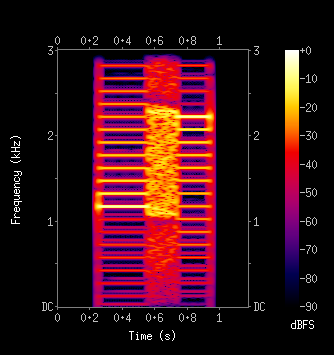
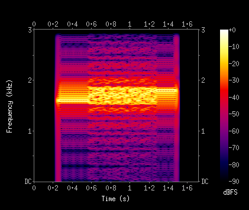

On the air
What NeoAPRS sounds like on the air
You tune across 20 m and hear a short, even hiss that starts and stops sharply. Is that NeoAPRS? Here are the three signals it sends, each as its modem makes it, so you can tell them apart by ear and on a waterfall.
Each clip is one packet, N0CALL>APZNEO:>NeoAPRS, from the Mercury and Direwolf that NeoAPRS carries, with the settings NeoAPRS gives them, and nothing added. The pictures are made from the clips, all on the same scale: time to the right, 0 to 3 kHz of audio upwards.
Mercury

- How long: 3.8 seconds from key to unkey, of which 3.4 seconds are sound. Every frame is this long, whatever it carries.
- By ear: an even hiss with a faint buzz in it, starting and stopping at once.
- On the waterfall: a flat block about 560 Hz wide, from 1219 to 1781 Hz above the dial, with straight edges: nine carriers side by side.
- Where: on HF, on the suggested dials, such as 14.1070 MHz USB on 20 m and 7.0541 MHz USB on 40 m.
Packet at 1200 baud

- How long: 0.7 seconds for this short packet; a beacon with a position and a comment takes about a second.
- By ear: a short, harsh burst, two tones switching too fast to hear apart.
- On the waterfall: two tones, 1200 and 2200 Hz, about 1.2 kHz from edge to edge; the flags at the start and the end draw a comb of thin lines.
- Where: on VHF FM, such as 144.800 MHz.
Packet at 300 baud

- How long: 1.2 seconds for this short packet; a packet of 80 bytes takes over two seconds.
- By ear: a slower warble of two notes close together.
- On the waterfall: a narrow stripe about 340 Hz wide around its two tones, 1600 and 1800 Hz; the flags at the start and the end show as two thin lines.
- Where: on HF, usually 10.1476 MHz USB.
Which radio hears which
| Mercury | A radio of the type Sound card under Mercury (DATAC3). Only Mercury hears Mercury. |
|---|---|
| Packet at 1200 baud | Sound card, 1200 (VHF/UHF), or any KISS TNC on VHF |
| Packet at 300 baud | Sound card, 300 (HF), or a KISS TNC with On HF ticked |